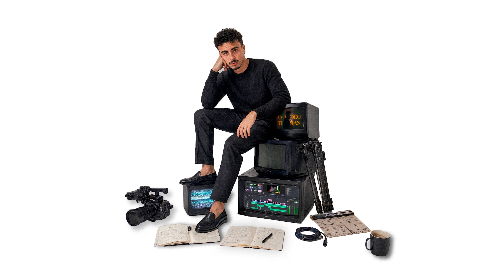

↓ Ouvert aux collabs
always a creative mind
JE FAIS DES FILMS.

— passionné & motivé
ON DISCUTE ?
MARIAGE✦
AFTERMOVIE✦
INTERVIEW✦
DOCU✦
CV VIDÉO✦
REELS✦
MARIAGE✦
AFTERMOVIE✦
INTERVIEW✦
DOCU✦
CV VIDÉO✦
REELS✦
— TRAVAUX SÉLECTIONNÉS
Plein de projets,
une seule obsession.
UBER EATS✦
FORMULE 4✦
VINCENT SALUR✦
GALERIES LAFAYETTE✦
UBER EATS✦
FORMULE 4✦
VINCENT SALUR✦
GALERIES LAFAYETTE✦
— À PROPOS
Je raconte des histoires avec une caméra.
Depuis 2022 j'ai eu la chance de toucher à plein de formats — pubs, reels institutionnels, reels trendy réseaux, showreels, docus, aftermovies, podcasts, et même des reels pour des pilotes de Formule 4. Chaque format a son terrain de jeu, et j'aime autant la préprod (concept, écriture, repérage) que le tournage. Dispo aussi en pure mission montage si c'est ça qu'il te faut — sans souci.
DAVINCI RESOLVE · PREMIERE PRO · AFTER EFFECTS · PHOTOSHOP · LIGHTROOM
→ POUR LE PETIT MOT
Envie de me connaître un peu plus ?
Voici mon CV vidéo réalisé en 2025.
🎬
CV vidéo à venir
Ajoute l'ID YouTube dans le CMS
— ILS ONT TRAVAILLÉ AVEC MOI
🎬
01
"Thomas comprend la marque avant même de tourner."
— HIVING FOOD
Brand Manager
👨🏻💼
02
"Un oeil de directeur, une exécution de réalisateur."
— EDGE TECH
Founder
🎨
03
"Ultra réactif. Le résultat dépasse ce qu'on imaginait."
— VINCENT SALUR
Créateur
→ Showreel 2025
02:14
→ JOIN THE NEXT PROJECT
DISCUTONS.
Un brief, une idée vague, un planning serré.
— j'écoute.